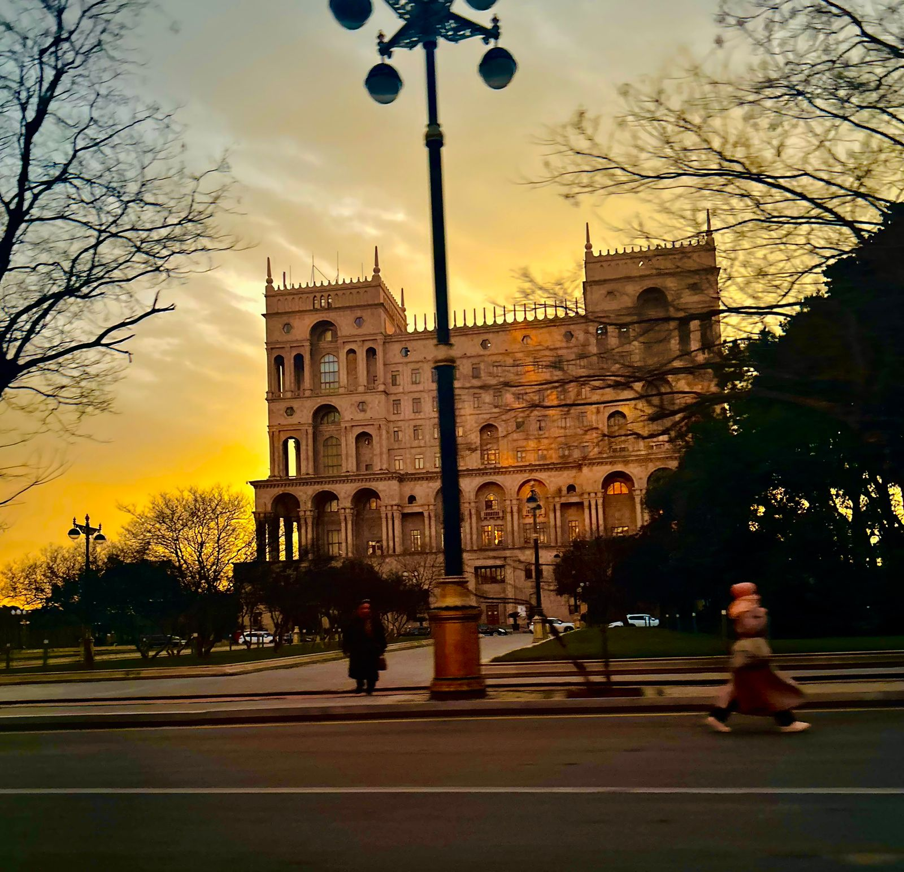
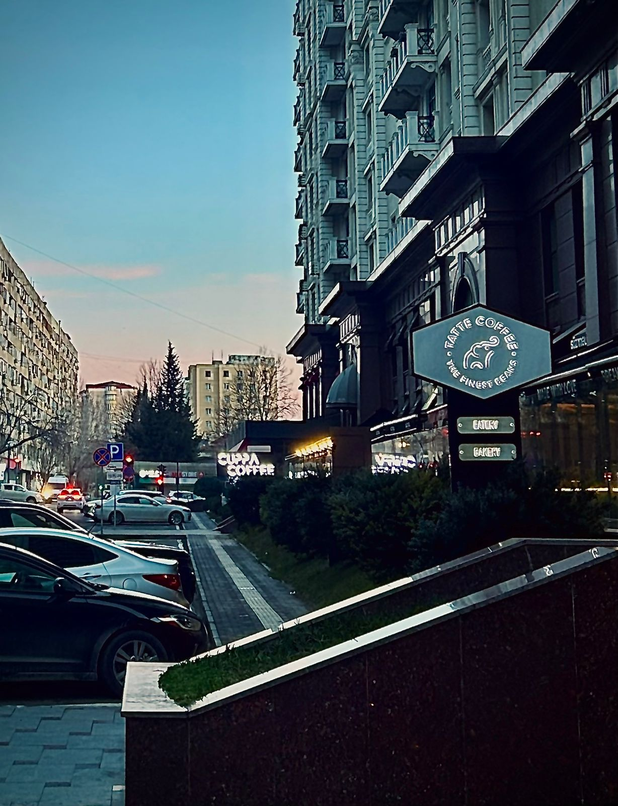

Our Mission
Where the American Dream meets Baku’s Skyline

Connecting Cultures
We celebrate the vibrant mix of American energy and Azerbaijani warmth — building a bridge through food, art, and shared experiences.

Supporting Local Spots
From burger joints to rooftop bars, we highlight Baku’s best American-inspired hangouts and the people behind them.

Creating Community
Our mission is to make every American and culture-lover in Baku feel connected, inspired, and at home.